Monitoring Diabetic Foot Ulcers to Prevent Amputation
In my senior year at Duke, I took a comprehensive two-semester design course focused on bringing a medical device from concept to manufacturing. Alongside three talented classmates, we chose to address the significant issue of diabetic foot ulcers (DFUs).
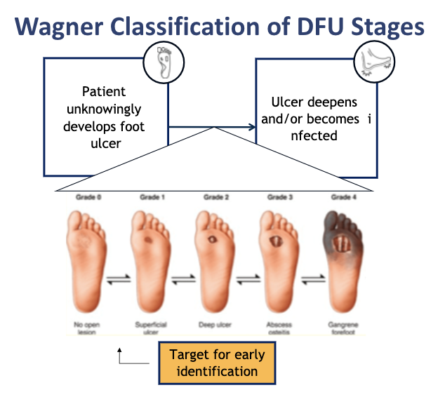
DFUs are sores that develop on the feet of diabetic patients, particularly in areas where sensation is limited due to peripheral neuropathy. Each year, DFUs impact 1.6 million Americans and can lead to severe complications, including amputations and even death.
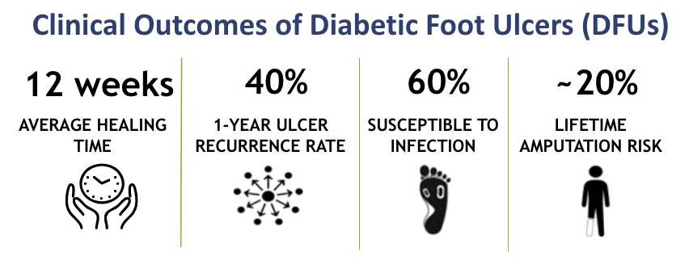
We discovered that diabetic patients should be checking their feet daily for early signs of ulcers, such as hardened calluses. However, many patients face mobility challenges and often neglect this crucial self-exam. Through interviews with stakeholders—including DFU patients, podiatrists, and orthopedic surgeons—we recognized the urgent need for a device that could detect DFUs early and alert patients to seek timely medical attention.
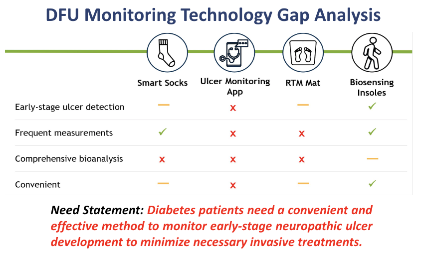
Our proposed solution harnessed two early biomarkers that signal an increased risk for ulcer development: elevated temperature and increased tissue modulus. To capture these metrics, we designed a multimodal sensing module capable of measuring local temperature and tissue modulus. Developing a straightforward method to assess modulus based on a force-deflection curve required extensive research and innovative thinking. Ultimately, we applied the Hertz Contact Theory and designed a spherical indentation probe to slightly deform the skin, thereby allowing a miniature load cell to measure the force necessary for that deformation.
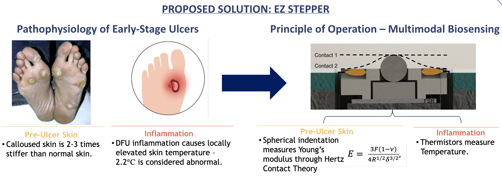
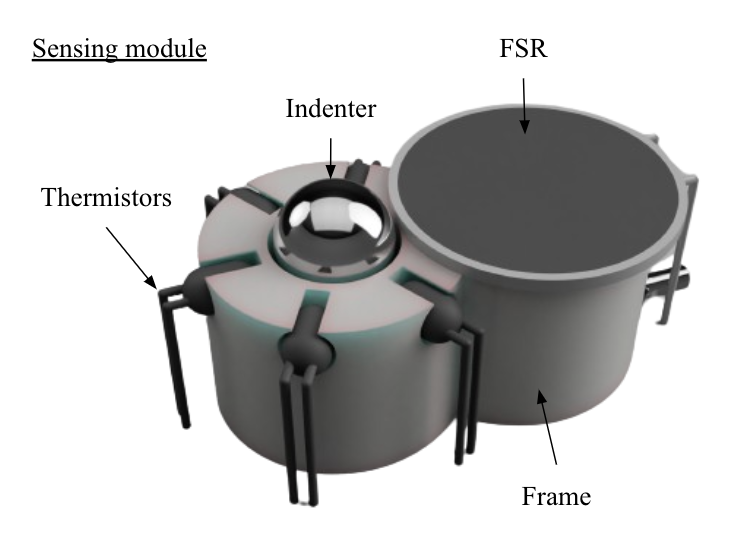
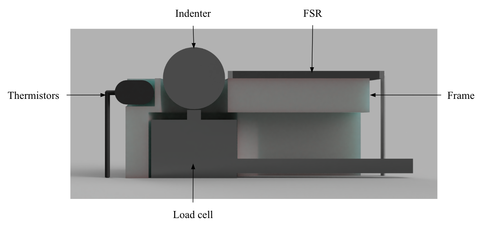
These sensing modules were integrated into a mat that users could stand on to assess their daily ulcer risk. For cost-effectiveness, we focused on three high-risk areas of the plantar surface. The mat also included alignment guides for consistent daily use and an interactive display to provide users with immediate feedback.
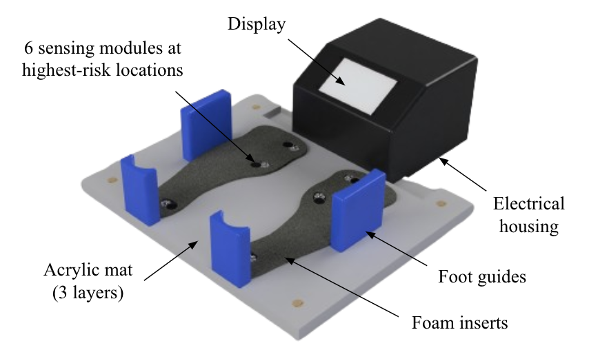
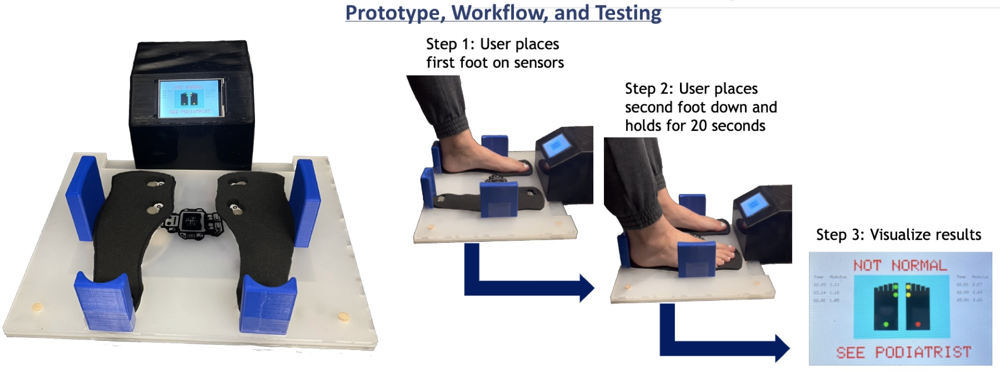
While this conceptual approach seemed promising for our second semester, which focused on prototyping, the actual fabrication proved to be one of the most challenging aspects of the project. The circuit design involved wiring hundreds of sensors, resistors, and buffers by hand, demanding patience and meticulous attention to detail. My team dedicated countless hours to troubleshooting and testing, even documenting our journey on our YouTube channel: Foot Guys. The moment our device powered on and accurately displayed the modulus and temperature readings, it was all worth it.
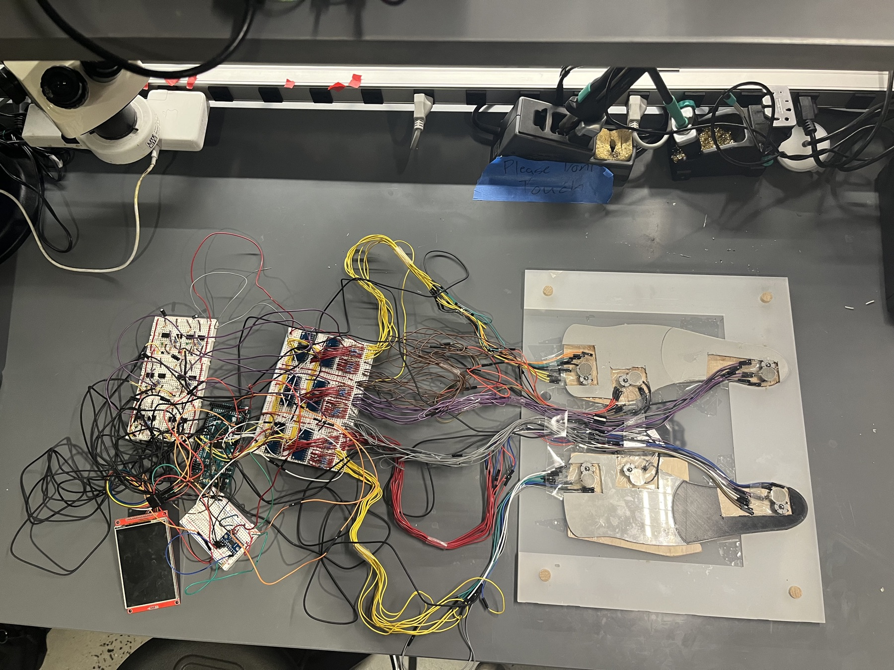
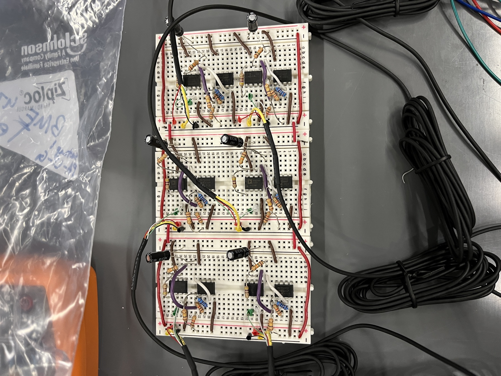
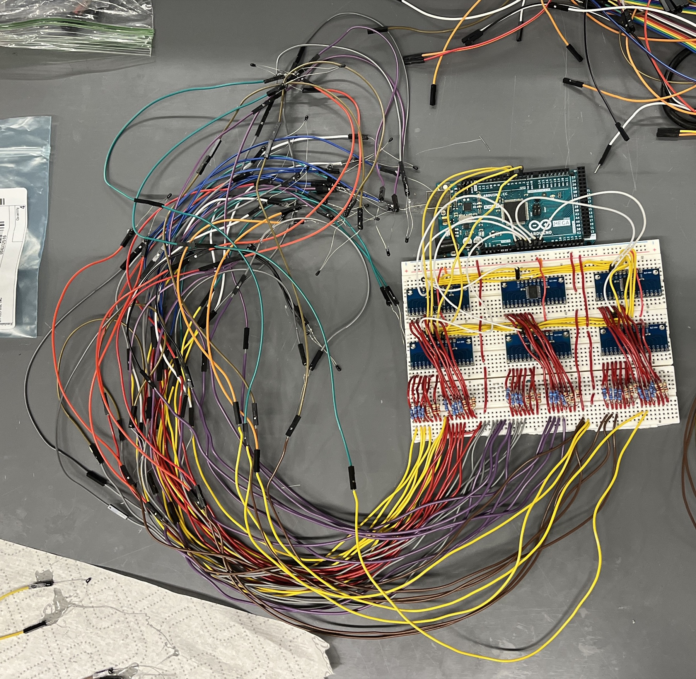
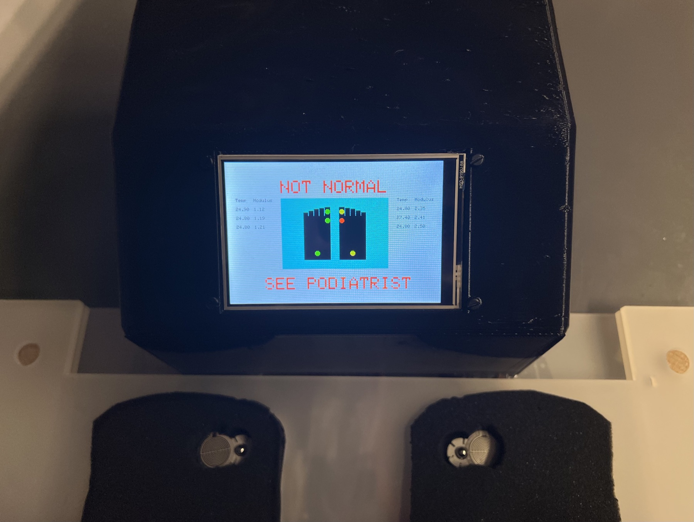
With a functional prototype in hand, we aimed to quantify its performance through human testing. We created phantoms with varying moduli to simulate the presence and absence of calluses. By combining these with electrically heated socks, we generated localized temperature changes that mimicked conditions likely to lead to ulcer formation. We conducted tests with multiple participants using these foot phantoms.
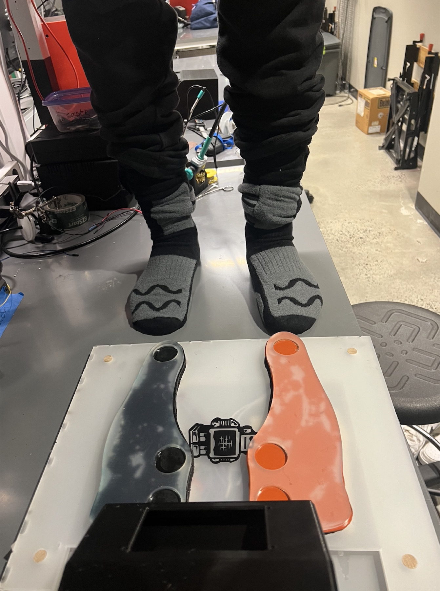
Our results were promising: the device accurately detected local temperature rises 87.5% of the time and identified calluses with 100% accuracy. We recognized that further testing and iteration could enhance the sensitivity of our sensing modules, but we ultimately chose to focus on refining our documentation and preparing for presentation.
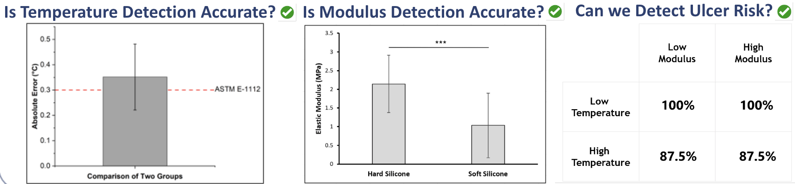
I created detailed SolidWorks drawings of both the sensing module and the overall mat, specifying the expected tolerances for large-scale manufacturing (ModuleDrawingToleranced, MatDrawingToleranced). Our team also outlined a strategy for ramping up production and bringing the device to market, which we are currently looking into while filing our patent. We conducted a market assessment to evaluate potential market size and identified areas where our device could provide significant value. Its multimodal approach to detecting early-stage diabetic foot ulcers sets it apart, ensuring convenience for users.
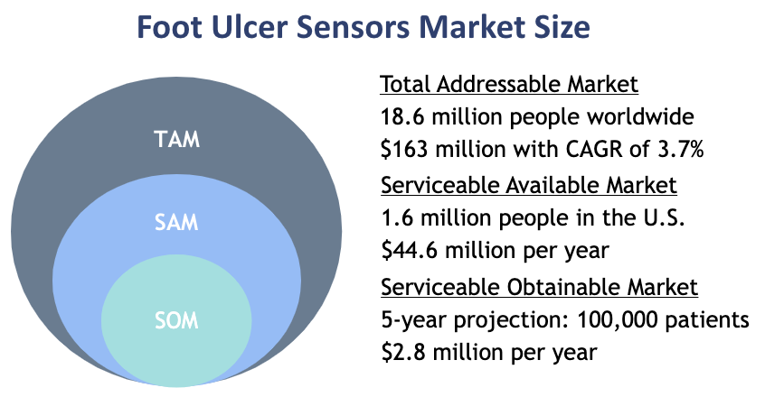
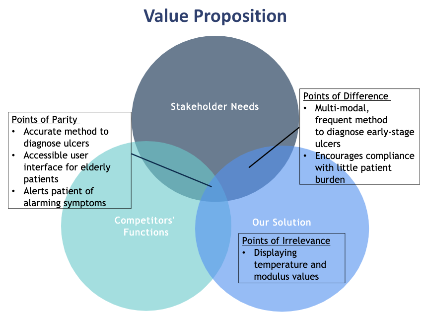
We concluded the project with a final pitch that showcased the merits of our device and participated in a poster session where we go to answer tons of insightful questions. I felt honored to be part of this impactful project and am excited to see where its future leads!
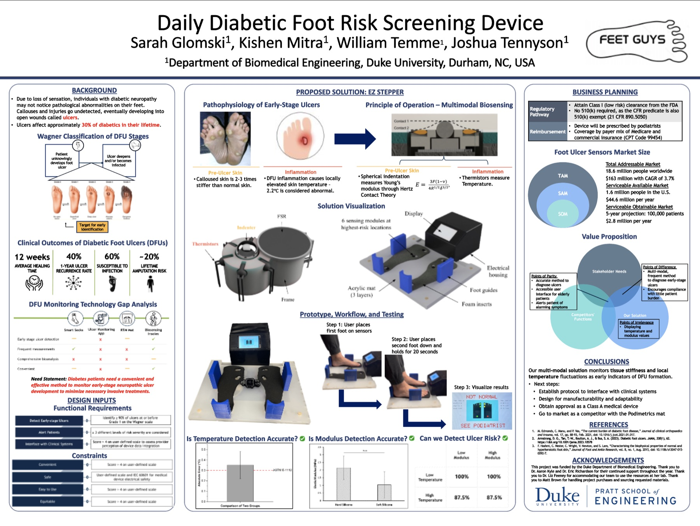